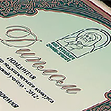
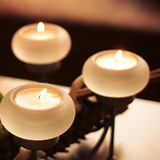
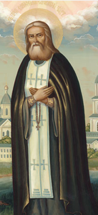

-

Конкурс «Православная инициатива»
Благотворительный фонд преподобного Серафима Саровского формирует систему адресной поддержки социальных, культурных, образовательных инициатив, выдвигаемых теми нашими согражданами, кого можно назвать «православным сектором» становящегося...
-

Конкурс «Православная инициатива»
Состоялось чествование победителей и лауреатов педагогического конкурса «Серафимовский учитель»
-
Инвестиционная программа Фонда
СИнвестиционная программа направлена на восстановление храмов, увековечивание памятных мест и возрождение наследия преподобного Серафима Саровского. Узнайте больше у будущих инвестиционных проектах фонда и об уже осуществленных проектах.
-

Конкурс «Православная инициатива»
Серафи́м Саро́вский ( Про́хор Исидо́рович Мошни́н) — иеромонах Саровского монастыря. Прославлен Российской церковью в 1903 году в лике преподобных по инициативе царя Николая II. .
Родился в 1754 году в Курске, в семье богатого именитого купца Исидора Мошнина и его жены Агафии. В возрасте 7 лет упал с колокольни строящегося Сергиево-Казанского собора на месте сгоревшего ранее храма Преподобного Сергия Радонежского, но остался невредим. В юном возрасте Прохор тяжело заболел. Во время болезни он увидел во сне Богородицу, пообещавшую его исцелить. Сон оказался правдивым: во время Крестного хода мимо дома пронесли икону Знамения Пресвятой Богородицы.